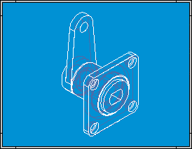
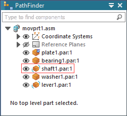
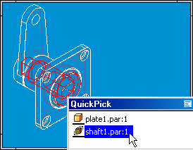
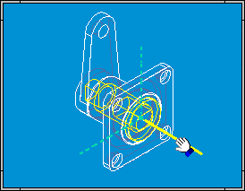
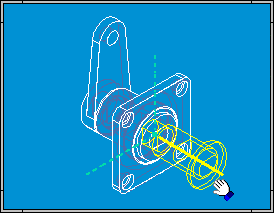
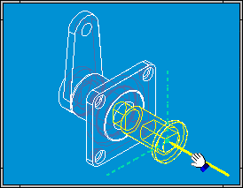
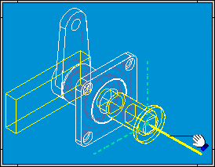

Examples: Dynamically moving a part in an assembly
You can perform the steps described below by opening MOVPRT1.ASM located in the Solid Edge Training folder.

-
Click the PathFinder tab.
Notice that SHAFT1.PAR is not fully positioned. You can only move parts that are grounded or not fully positioned. If a part is fully positioned, you can use the Suppress command on the shortcut menu to temporarily suppress a relationship.

-
Choose Home tab→Modify group→Drag Component
 .
. You can move a part along a selected axis, rotate a part around an axis, or move a part in free space.
-
On the Drag Component command bar, in the Motion analysis list, set the No Analysis option.
-
In the application window, use QuickPick to select SHAFT1.PAR. On the Drag Component command bar, set the Move option.

-
In the application window, position your cursor over the axis, as shown.

-
When the axis is highlighted, press and hold the left mouse button, then drag the cursor, as shown.

-
On the Drag Component command bar, set the Rotate option .
-
In the application window, position your cursor over the axis, as shown.

-
When the axis highlights, press and hold the left mouse button down, then drag your cursor as shown next. Notice that LEVER1.PAR also highlights, and rotates with the shaft. The lever rotates because the relationships that control its position allow it to rotate, but not move.

How do I
Create a new alternate position assemblyCreate a new family of assemblies
Publish family of assembly members to Teamcenter
Define a list of alternate components for a part
Save an alternate assembly member as a separate assembly
Learn more
Alternate AssembliesAlternate assemblies impact on Solid Edge functionality
Using Family of Assemblies in the Teamcenter-managed environment
Look up more details
Save to Source commandSave to Member command
Define Alternate Components Dialog Box
Define Alternate Component command
Edit Definition command
Alternate Member Dialog Box
Assembly Member dialog box
New Member dialog box (Family of Assemblies tab)
Alternate Assemblies dialog box
Dynamic Configuration dialog box
Family of Assemblies tab
Alternate Assemblies Table dialog box
Save Member dialog box